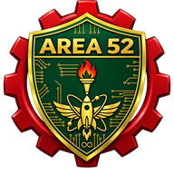

AREA 52Public portfolio gatewayComputer Science · ICT · Research
Muhammad Al-Muzahid
Software engineer, machine-learning researcher, former university lecturer and 3× ICPC Asia Dhaka Regionalist from Bangladesh.
- BUET · M.Sc. Engg. in ICT
- IEEE-published researcher
- 2,650+ problems solved
This gateway is public. The detailed portfolio remains invitation-only and may request Google sign-in.